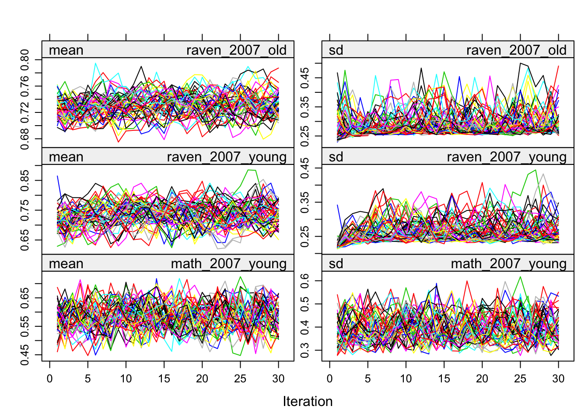
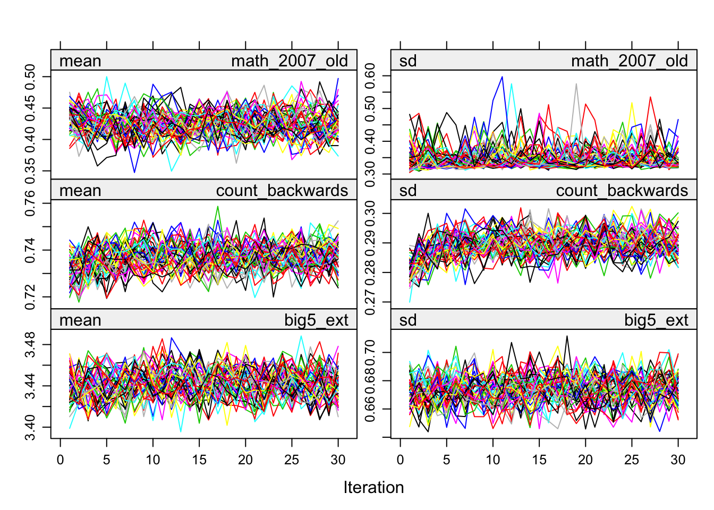
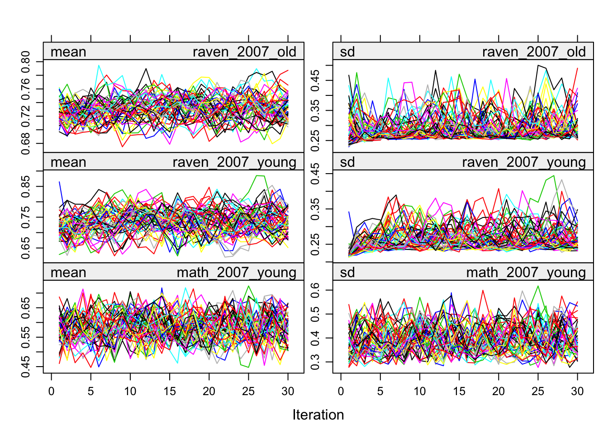
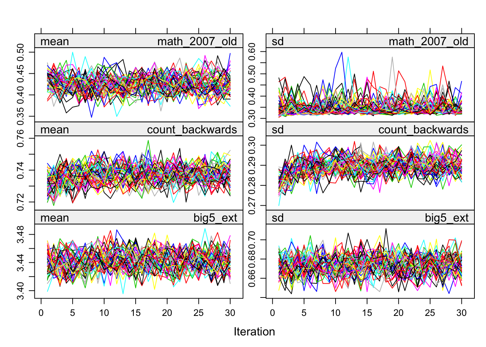
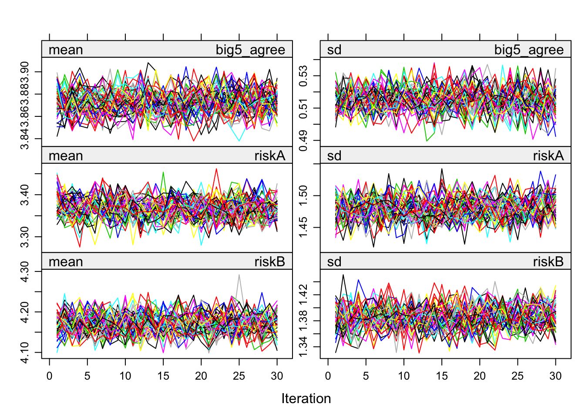
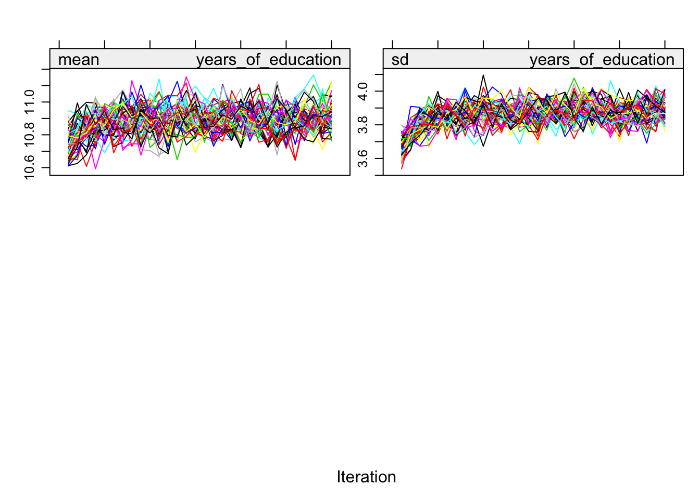
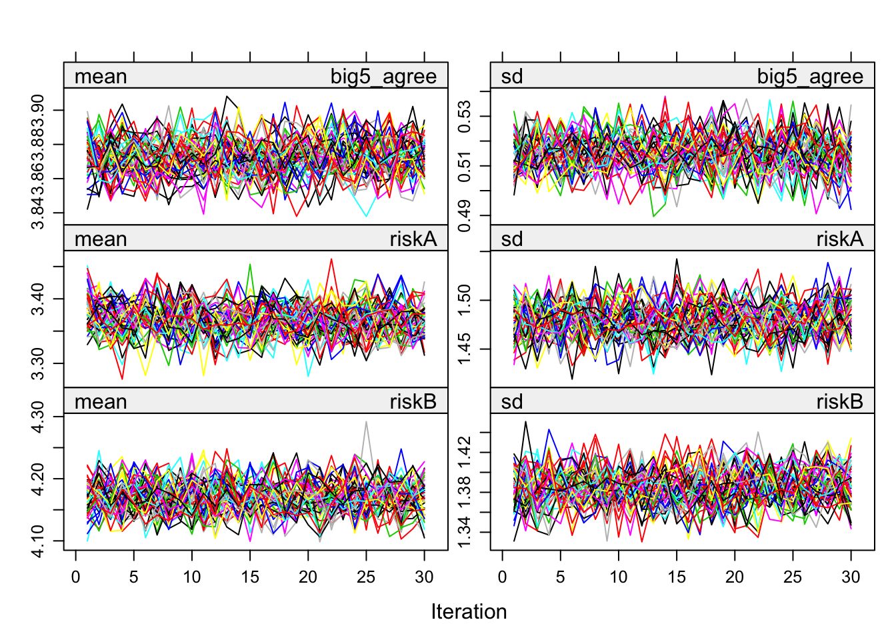
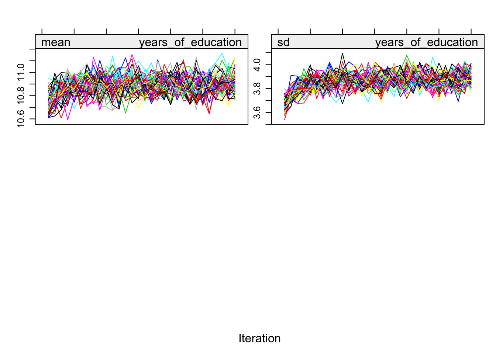

3_imputation_check
Laura Botzet & Ruben Arslan
28 September 2017
Imputation Checks
Helper
source("0_helpers.R")##
## Attaching package: 'formr'## The following object is masked from 'package:rmarkdown':
##
## word_document##
## Attaching package: 'lubridate'## The following object is masked from 'package:base':
##
## date## Loading required package: carData## lattice theme set by effectsTheme()
## See ?effectsTheme for details.##
## Attaching package: 'data.table'## The following objects are masked from 'package:lubridate':
##
## hour, isoweek, mday, minute, month, quarter, second, wday, week, yday, year## The following objects are masked from 'package:formr':
##
## first, last## Loading required package: Matrix##
## Attaching package: 'lmerTest'## The following object is masked from 'package:lme4':
##
## lmer## The following object is masked from 'package:stats':
##
## step## Loading required package: usethis##
## Attaching package: 'psych'## The following objects are masked from 'package:ggplot2':
##
## %+%, alpha## This is lavaan 0.6-5## lavaan is BETA software! Please report any bugs.##
## Attaching package: 'lavaan'## The following object is masked from 'package:psych':
##
## cor2cov## Loading required package: lattice## Loading required package: survival## Loading required package: Formula##
## Attaching package: 'Hmisc'## The following object is masked from 'package:psych':
##
## describe## The following objects are masked from 'package:base':
##
## format.pval, units##
## Attaching package: 'tidyr'## The following objects are masked from 'package:Matrix':
##
## expand, pack, unpack##
## Attaching package: 'dplyr'## The following objects are masked from 'package:Hmisc':
##
## src, summarize## The following objects are masked from 'package:data.table':
##
## between, first, last## The following objects are masked from 'package:lubridate':
##
## intersect, setdiff, union## The following objects are masked from 'package:formr':
##
## first, last## The following objects are masked from 'package:stats':
##
## filter, lag## The following objects are masked from 'package:base':
##
## intersect, setdiff, setequal, union##
## Attaching package: 'codebook'## The following object is masked from 'package:psych':
##
## bfi## The following objects are masked from 'package:formr':
##
## aggregate_and_document_scale, asis_knit_child, expired, paste.knit_asis, rescue_attributes,
## reverse_labelled_values##
## Attaching package: 'effsize'## The following object is masked from 'package:psych':
##
## cohen.dData
### Import alldata used for birthorder and g-factors computed
alldata_birthorder = readRDS("data/alldata_birthorder_missing.rds")
alldata_birthorder_i = readRDS("data/alldata_birthorder_i_ml.rds")
colnames(alldata_birthorder)mother_pidlink, age, male, birthorder_naive, sibling_count_naive, count_birthorder_naive, birthorder_genes, sibling_count_genes, count_birthorder_genes, raven_2015_young, math_2015_young, raven_2015_old, math_2015_old, words_delayed, adaptive_numbering, raven_2007_old, raven_2007_young, math_2007_young, math_2007_old, count_backwards, big5_ext, big5_con, big5_open, big5_neu, big5_agree, riskA, riskB, Elementary_missed, Elementary_worked, attended_school, years_of_education, Self_employed, ever_smoked, still_smoking, wage_last_month_log, wage_last_year_log, age2 and age3
Functions needed
n_imputations.mitml = function(imps) {
imps$iter$m
}
n_imputations.mids = function(imps) {
imps$m
}
n_imputations.amelia = function(imps) {
length(imps$imputations)
}
n_imputations = function(imps) { UseMethod("n_imputations") }
complete.mitml = mitml::mitmlComplete
complete.mids = mice::complete
complete = function(...) { UseMethod("complete") }
library(mice)##
## Attaching package: 'mice'## The following object is masked _by_ '.GlobalEnv':
##
## complete## The following object is masked from 'package:tidyr':
##
## complete## The following objects are masked from 'package:base':
##
## cbind, rbindlibrary(miceadds)## * miceadds 3.7-6 (2019-12-15 13:38:43)library(mitml)## *** This is beta software. Please report any bugs!
## *** See the NEWS file for recent changes.corr_pipe = . %>% as.matrix() %>%
Hmisc::rcorr(.) %>% {
left_join(left_join(.$r %>% reshape2::melt() %>% rename(r = value),
.$n %>% reshape2::melt() %>% rename(n = value), by = c("Var1", "Var2")),
.$P %>% reshape2::melt() %>% rename(p = value),
by = c("Var1", "Var2"))
} %>%
arrange(desc(r)) %>%
filter(Var1 != Var2)
alldata_birthorder_i_g_factor <- mids2mitml.list(alldata_birthorder_i)
alldata_birthorder_i_tbl = alldata_birthorder_i_g_factor %>% tbl_df.mitml.listCompute g factor
Or rather simply a sum score of scaled test scores to keep things simple here.
# Imputed data
alldata_birthorder_i_g_factor <- within(alldata_birthorder_i_g_factor, {
g_factor_2015 <- rowMeans(scale(cbind(raven_2015_old, math_2015_old, count_backwards, words_delayed, adaptive_numbering)))
})
alldata_birthorder_i_g_factor <- within(alldata_birthorder_i_g_factor, {
g_factor_2007 <- rowMeans(scale(cbind(raven_2007_old, math_2007_old, count_backwards, words_delayed, adaptive_numbering)))
})Iterations and convergence
plot(alldata_birthorder_i)

 
 



Correlations, iterations and density
# correlations
correlations_original = corr_pipe(alldata_birthorder %>% select_if(is.numeric))
correlations_imputed = corr_pipe(alldata_birthorder_i_g_factor[[1]] %>% select_if(is.numeric))
correlations_original = correlations_original %>%
mutate(v = paste0(Var1, Var2)) %>%
rename(Var1_original = Var1, Var2_original= Var2, n_original = n, r_original = r, p_original = p)
correlations_imputed = correlations_imputed %>%
mutate(v = paste0(Var1, Var2)) %>%
rename(Var1_imputed = Var1, Var2_imputed = Var2, n_imputed = n, r_imputed = r, p_imputed = p)
correlations = full_join(correlations_original, correlations_imputed, by = "v")
cor.test(correlations$r_original, correlations$r_imputed)| Test statistic | df | P value | Alternative hypothesis | cor |
|---|---|---|---|---|
| 30.46 | 1178 | 8.745e-151 * * * | two.sided | 0.6638 |
library(ggrepel)
sum(abs(correlations$r_original - correlations$r_imputed) > 0.5, na.rm = T)## [1] 18correlations <- correlations %>%
mutate(label = if_else(abs(r_original - r_imputed) > 0.5,
paste(Var1_original, Var2_original),
NA_character_))
ggplot(correlations, aes(r_original, r_imputed)) +
geom_point(alpha = 0.1) +
geom_text_repel(aes(label = label))
# check densities of imputed/real
densityplot(alldata_birthorder_i, ~ birthorder_genes + sibling_count_genes + birthorder_naive)
densityplot(alldata_birthorder_i, ~ raven_2015_young + math_2015_young + raven_2015_old + math_2015_old)
densityplot(alldata_birthorder_i, ~ words_delayed + adaptive_numbering + count_backwards)
densityplot(alldata_birthorder_i, ~ raven_2007_old + raven_2007_young + math_2007_young + math_2007_old)
densityplot(alldata_birthorder_i, ~ big5_ext + big5_con + big5_open + big5_neu + big5_agree)
densityplot(alldata_birthorder_i, ~ riskA + riskB)
densityplot(alldata_birthorder_i, ~ Elementary_missed + Elementary_worked + attended_school + years_of_education + Self_employed)
densityplot(alldata_birthorder_i, ~ ever_smoked + still_smoking + wage_last_month_log + wage_last_year_log)
pdf("density.pdf")
densityplot(alldata_birthorder_i, ~ birthorder_genes + sibling_count_genes + birthorder_naive)
densityplot(alldata_birthorder_i, ~ raven_2015_young + math_2015_young + raven_2015_old + math_2015_old)
densityplot(alldata_birthorder_i, ~ words_delayed + adaptive_numbering + count_backwards)
densityplot(alldata_birthorder_i, ~ raven_2007_old + raven_2007_young + math_2007_young + math_2007_old)
densityplot(alldata_birthorder_i, ~ big5_ext + big5_con + big5_open + big5_neu + big5_agree)
densityplot(alldata_birthorder_i, ~ riskA + riskB)
densityplot(alldata_birthorder_i, ~ Elementary_missed + Elementary_worked + attended_school + years_of_education + Self_employed)
densityplot(alldata_birthorder_i, ~ ever_smoked + still_smoking + wage_last_month_log + wage_last_year_log)
dev.off()## quartz_off_screen
## 2# additional analyses based on van Buuren & Groothuis-Oudshoorn, 2011
xyplot(alldata_birthorder_i, birthorder_genes ~ birthorder_naive | .imp , pch = 20, cex = 1.4)
xyplot(alldata_birthorder_i, sibling_count_genes ~ birthorder_genes | .imp , pch = 20, cex = 1.4)
xyplot(alldata_birthorder_i, raven_2015_old ~ birthorder_genes | .imp , pch = 20, cex = 1.4)
G-Factor
# Normal data - no misses
alldata_birthorder <- alldata_birthorder %>%
mutate(pidlink = row_number())
no_miss = alldata_birthorder %>%
filter(!is.na(raven_2015_old), !is.na(math_2015_old), !is.na(count_backwards),
!is.na(words_delayed), !is.na(adaptive_numbering))
fa.parallel(no_miss %>% select(raven_2015_old, math_2015_old, count_backwards, words_delayed, adaptive_numbering) %>% data.frame())
## Parallel analysis suggests that the number of factors = 2 and the number of components = 1fa(no_miss %>% select(raven_2015_old, math_2015_old, count_backwards, words_delayed, adaptive_numbering) %>% data.frame(), nfactors = 1)## Factor Analysis using method = minres
## Call: fa(r = no_miss %>% select(raven_2015_old, math_2015_old, count_backwards,
## words_delayed, adaptive_numbering) %>% data.frame(), nfactors = 1)
## Standardized loadings (pattern matrix) based upon correlation matrix
## MR1 h2 u2 com
## raven_2015_old 0.62 0.38 0.62 1
## math_2015_old 0.51 0.26 0.74 1
## count_backwards 0.46 0.22 0.78 1
## words_delayed 0.42 0.18 0.82 1
## adaptive_numbering 0.62 0.38 0.62 1
##
## MR1
## SS loadings 1.42
## Proportion Var 0.28
##
## Mean item complexity = 1
## Test of the hypothesis that 1 factor is sufficient.
##
## The degrees of freedom for the null model are 10 and the objective function was 0.58 with Chi Square of 8539
## The degrees of freedom for the model are 5 and the objective function was 0.01
##
## The root mean square of the residuals (RMSR) is 0.02
## The df corrected root mean square of the residuals is 0.02
##
## The harmonic number of observations is 14688 with the empirical chi square 77.5 with prob < 2.8e-15
## The total number of observations was 14688 with Likelihood Chi Square = 78.47 with prob < 1.8e-15
##
## Tucker Lewis Index of factoring reliability = 0.983
## RMSEA index = 0.032 and the 90 % confidence intervals are 0.026 0.038
## BIC = 30.49
## Fit based upon off diagonal values = 1
## Measures of factor score adequacy
## MR1
## Correlation of (regression) scores with factors 0.82
## Multiple R square of scores with factors 0.67
## Minimum correlation of possible factor scores 0.35om_results = omega(no_miss %>% select(raven_2015_old, math_2015_old, count_backwards, words_delayed, adaptive_numbering) %>% data.frame(), nfactors = 1, sl = F)## Omega_h for 1 factor is not meaningful, just omega_tom_results## Omega
## Call: omegah(m = m, nfactors = nfactors, fm = fm, key = key, flip = flip,
## digits = digits, title = title, sl = sl, labels = labels,
## plot = plot, n.obs = n.obs, rotate = rotate, Phi = Phi, option = option,
## covar = covar)
## Alpha: 0.65
## G.6: 0.61
## Omega Hierarchical: 0.66
## Omega H asymptotic: 1
## Omega Total 0.66
##
## Schmid Leiman Factor loadings greater than 0.2
## g F1* h2 u2 p2
## raven_2015_old 0.62 0.38 0.62 1
## math_2015_old 0.51 0.26 0.74 1
## count_backwards 0.46 0.22 0.78 1
## words_delayed 0.42 0.18 0.82 1
## adaptive_numbering 0.62 0.38 0.62 1
##
## With eigenvalues of:
## g F1*
## 1.4 0.0
##
## general/max 1.02e+16 max/min = 1
## mean percent general = 1 with sd = 0 and cv of 0
## Explained Common Variance of the general factor = 1
##
## The degrees of freedom are 5 and the fit is 0.01
## The number of observations was 14688 with Chi Square = 78.47 with prob < 1.8e-15
## The root mean square of the residuals is 0.02
## The df corrected root mean square of the residuals is 0.02
## RMSEA index = 0.032 and the 10 % confidence intervals are 0.026 0.038
## BIC = 30.49
##
## Compare this with the adequacy of just a general factor and no group factors
## The degrees of freedom for just the general factor are 5 and the fit is 0.01
## The number of observations was 14688 with Chi Square = 78.47 with prob < 1.8e-15
## The root mean square of the residuals is 0.02
## The df corrected root mean square of the residuals is 0.02
##
## RMSEA index = 0.032 and the 10 % confidence intervals are 0.026 0.038
## BIC = 30.49
##
## Measures of factor score adequacy
## g F1*
## Correlation of scores with factors 0.82 0
## Multiple R square of scores with factors 0.67 0
## Minimum correlation of factor score estimates 0.35 -1
##
## Total, General and Subset omega for each subset
## g F1*
## Omega total for total scores and subscales 0.66 0.66
## Omega general for total scores and subscales 0.66 0.66
## Omega group for total scores and subscales 0.00 0.00omega.diagram(om_results)
"g_factor_nomiss =~ raven_2015_old + math_2015_old + count_backwards + words_delayed + adaptive_numbering" %>%
cfa(data = no_miss, std.lv = T, std.ov = T) -> cfa_g
summary(cfa_g)## lavaan 0.6-5 ended normally after 14 iterations
##
## Estimator ML
## Optimization method NLMINB
## Number of free parameters 10
##
## Number of observations 14688
##
## Model Test User Model:
##
## Test statistic 78.411
## Degrees of freedom 5
## P-value (Chi-square) 0.000
##
## Parameter Estimates:
##
## Information Expected
## Information saturated (h1) model Structured
## Standard errors Standard
##
## Latent Variables:
## Estimate Std.Err z-value P(>|z|)
## g_factor_nomiss =~
## raven_2015_old 0.616 0.010 63.882 0.000
## math_2015_old 0.514 0.010 53.360 0.000
## count_backwrds 0.465 0.010 48.038 0.000
## words_delayed 0.419 0.010 43.063 0.000
## adaptiv_nmbrng 0.616 0.010 63.838 0.000
##
## Variances:
## Estimate Std.Err z-value P(>|z|)
## .raven_2015_old 0.620 0.010 59.142 0.000
## .math_2015_old 0.736 0.010 70.337 0.000
## .count_backwrds 0.784 0.011 73.996 0.000
## .words_delayed 0.824 0.011 76.713 0.000
## .adaptiv_nmbrng 0.621 0.010 59.203 0.000
## g_factor_nomss 1.000## Explained variance:
x = inspect(cfa_g, "rsquare")
no_miss$g_factor_nomiss = predict(cfa_g)[,1]
no_miss = no_miss %>% select(pidlink, g_factor_nomiss)
alldata_birthorder = left_join(alldata_birthorder, no_miss, by = "pidlink")
qplot(alldata_birthorder$g_factor_nomiss)## `stat_bin()` using `bins = 30`. Pick better value with `binwidth`.
qplot(alldata_birthorder_i_g_factor[[1]]$g_factor_2015)## `stat_bin()` using `bins = 30`. Pick better value with `binwidth`.
qplot(alldata_birthorder_i_g_factor[[1]]$g_factor_2007)## `stat_bin()` using `bins = 30`. Pick better value with `binwidth`.
summary(lm(g_factor_nomiss ~ raven_2015_old, alldata_birthorder))| Estimate | Std. Error | t value | Pr(>|t|) |
|---|---|---|---|
| -1.798 | 0.01381 | -130.1 | 0 |
| 2.599 | 0.01889 | 137.6 | 0 |
| Observations | Residual Std. Error | \(R^2\) | Adjusted \(R^2\) |
|---|---|---|---|
| 14688 | 0.5429 | 0.5631 | 0.5631 |
summary(lm(g_factor_2015 ~ raven_2015_old, alldata_birthorder_i_g_factor[[1]]))| Estimate | Std. Error | t value | Pr(>|t|) |
|---|---|---|---|
| -1.232 | 0.006938 | -177.6 | 0 |
| 1.828 | 0.009684 | 188.8 | 0 |
| Observations | Residual Std. Error | \(R^2\) | Adjusted \(R^2\) |
|---|---|---|---|
| 39653 | 0.4692 | 0.4734 | 0.4734 |
summary(lm(g_factor_nomiss ~ raven_2015_young, alldata_birthorder))| Estimate | Std. Error | t value | Pr(>|t|) |
|---|---|---|---|
| -1.41 | 0.03367 | -41.87 | 0 |
| 2.097 | 0.04143 | 50.63 | 0 |
| Observations | Residual Std. Error | \(R^2\) | Adjusted \(R^2\) |
|---|---|---|---|
| 5584 | 0.6084 | 0.3147 | 0.3146 |
summary(lm(g_factor_2015 ~ raven_2015_young, alldata_birthorder_i_g_factor[[1]]))| Estimate | Std. Error | t value | Pr(>|t|) |
|---|---|---|---|
| -0.1618 | 0.00621 | -26.06 | 1.858e-148 |
| 0.2324 | 0.007635 | 30.44 | 3.43e-201 |
| Observations | Residual Std. Error | \(R^2\) | Adjusted \(R^2\) |
|---|---|---|---|
| 39653 | 0.6391 | 0.02283 | 0.02281 |
alldata_birthorder %>% {cor.test(.$g_factor_nomiss, .$years_of_education)}| Test statistic | df | P value | Alternative hypothesis | cor |
|---|---|---|---|---|
| 67.47 | 14435 | 0 * * * | two.sided | 0.4896 |
alldata_birthorder_i_g_factor[[1]] %>% {cor.test(.$g_factor_2015, .$years_of_education)}| Test statistic | df | P value | Alternative hypothesis | cor |
|---|---|---|---|---|
| 83.51 | 39651 | 0 * * * | two.sided | 0.3868 |
alldata_birthorder_i_g_factor[[1]] %>% {cor.test(.$g_factor_2007, .$years_of_education)}| Test statistic | df | P value | Alternative hypothesis | cor |
|---|---|---|---|---|
| 141.9 | 39651 | 0 * * * | two.sided | 0.5805 |
LS0tCnRpdGxlOiAiM19pbXB1dGF0aW9uX2NoZWNrIgphdXRob3I6ICJMYXVyYSBCb3R6ZXQgJiBSdWJlbiBBcnNsYW4iCmRhdGU6ICIyOCBTZXB0ZW1iZXIgMjAxNyIKb3V0cHV0OiBodG1sX2RvY3VtZW50CmVkaXRvcl9vcHRpb25zOiAKICBjaHVua19vdXRwdXRfdHlwZTogY29uc29sZQotLS0KCiMgPHNwYW4gc3R5bGU9ImNvbG9yOiNGRkQ5MkYiPkltcHV0YXRpb24gQ2hlY2tzPC9zcGFuPiB7LnRhYnNldH0KCmBgYHtyIHNldHVwLCBpbmNsdWRlPUZBTFNFfQprbml0cjo6b3B0c19jaHVuayRzZXQoZWNobyA9IFRSVUUpCmBgYAoKIyMgSGVscGVyCmBgYHtyIGhlbHBlcn0Kc291cmNlKCIwX2hlbHBlcnMuUiIpCmBgYAoKCiMjIERhdGEKYGBge3J9CiMjIyBJbXBvcnQgYWxsZGF0YSB1c2VkIGZvciBiaXJ0aG9yZGVyIGFuZCBnLWZhY3RvcnMgY29tcHV0ZWQKYWxsZGF0YV9iaXJ0aG9yZGVyID0gcmVhZFJEUygiZGF0YS9hbGxkYXRhX2JpcnRob3JkZXJfbWlzc2luZy5yZHMiKQoKYWxsZGF0YV9iaXJ0aG9yZGVyX2kgPSAgcmVhZFJEUygiZGF0YS9hbGxkYXRhX2JpcnRob3JkZXJfaV9tbC5yZHMiKQoKY29sbmFtZXMoYWxsZGF0YV9iaXJ0aG9yZGVyKQpgYGAKCgojIyBGdW5jdGlvbnMgbmVlZGVkCgpgYGB7cn0KCm5faW1wdXRhdGlvbnMubWl0bWwgPSBmdW5jdGlvbihpbXBzKSB7CiAgaW1wcyRpdGVyJG0KfQpuX2ltcHV0YXRpb25zLm1pZHMgPSBmdW5jdGlvbihpbXBzKSB7CiAgaW1wcyRtCn0Kbl9pbXB1dGF0aW9ucy5hbWVsaWEgPSBmdW5jdGlvbihpbXBzKSB7CiAgbGVuZ3RoKGltcHMkaW1wdXRhdGlvbnMpCn0Kbl9pbXB1dGF0aW9ucyA9IGZ1bmN0aW9uKGltcHMpIHsgVXNlTWV0aG9kKCJuX2ltcHV0YXRpb25zIikgfQoKY29tcGxldGUubWl0bWwgPSBtaXRtbDo6bWl0bWxDb21wbGV0ZQpjb21wbGV0ZS5taWRzID0gbWljZTo6Y29tcGxldGUKY29tcGxldGUgPSBmdW5jdGlvbiguLi4pIHsgVXNlTWV0aG9kKCJjb21wbGV0ZSIpIH0KCmxpYnJhcnkobWljZSkKbGlicmFyeShtaWNlYWRkcykKbGlicmFyeShtaXRtbCkKCmNvcnJfcGlwZSA9IC4gJT4lICBhcy5tYXRyaXgoKSAlPiUgCkhtaXNjOjpyY29yciguKSAlPiUgewogIGxlZnRfam9pbihsZWZ0X2pvaW4oLiRyICU+JSByZXNoYXBlMjo6bWVsdCgpICU+JSByZW5hbWUociA9IHZhbHVlKSwgCiAgICAgICAgICAgICAgICAgICAgICAuJG4gJT4lIHJlc2hhcGUyOjptZWx0KCkgJT4lIHJlbmFtZShuID0gdmFsdWUpLCBieSA9IGMoIlZhcjEiLCAiVmFyMiIpKSwKICAgICAgICAgICAgLiRQICU+JSByZXNoYXBlMjo6bWVsdCgpICU+JSByZW5hbWUocCA9IHZhbHVlKSwgCiAgICAgICAgICAgIGJ5ID0gYygiVmFyMSIsICJWYXIyIikpCiAgfSAlPiUgCiAgYXJyYW5nZShkZXNjKHIpKSAlPiUgCiAgZmlsdGVyKFZhcjEgIT0gVmFyMikKCmFsbGRhdGFfYmlydGhvcmRlcl9pX2dfZmFjdG9yIDwtIG1pZHMybWl0bWwubGlzdChhbGxkYXRhX2JpcnRob3JkZXJfaSkKCmFsbGRhdGFfYmlydGhvcmRlcl9pX3RibCA9IGFsbGRhdGFfYmlydGhvcmRlcl9pX2dfZmFjdG9yICU+JSB0YmxfZGYubWl0bWwubGlzdAoKYGBgCgoKIyBDb21wdXRlIGcgZmFjdG9yCk9yIHJhdGhlciBzaW1wbHkgYSBzdW0gc2NvcmUgb2Ygc2NhbGVkIHRlc3Qgc2NvcmVzIHRvIGtlZXAgdGhpbmdzIHNpbXBsZSBoZXJlLgoKYGBge3J9CgojIEltcHV0ZWQgZGF0YQphbGxkYXRhX2JpcnRob3JkZXJfaV9nX2ZhY3RvciA8LSB3aXRoaW4oYWxsZGF0YV9iaXJ0aG9yZGVyX2lfZ19mYWN0b3IsIHsKICBnX2ZhY3Rvcl8yMDE1IDwtIHJvd01lYW5zKHNjYWxlKGNiaW5kKHJhdmVuXzIwMTVfb2xkLCBtYXRoXzIwMTVfb2xkLCBjb3VudF9iYWNrd2FyZHMsICB3b3Jkc19kZWxheWVkLCBhZGFwdGl2ZV9udW1iZXJpbmcpKSkKfSkKCmFsbGRhdGFfYmlydGhvcmRlcl9pX2dfZmFjdG9yIDwtIHdpdGhpbihhbGxkYXRhX2JpcnRob3JkZXJfaV9nX2ZhY3RvciwgewogIGdfZmFjdG9yXzIwMDcgPC0gcm93TWVhbnMoc2NhbGUoY2JpbmQocmF2ZW5fMjAwN19vbGQsIG1hdGhfMjAwN19vbGQsIGNvdW50X2JhY2t3YXJkcywgIHdvcmRzX2RlbGF5ZWQsIGFkYXB0aXZlX251bWJlcmluZykpKQp9KQpgYGAKCiMjIEl0ZXJhdGlvbnMgYW5kIGNvbnZlcmdlbmNlCgpgYGB7cn0KcGxvdChhbGxkYXRhX2JpcnRob3JkZXJfaSkKYGBgCgojIyBDb3JyZWxhdGlvbnMsIGl0ZXJhdGlvbnMgYW5kIGRlbnNpdHkgey5hY3RpdmV9CmBgYHtyfQojIGNvcnJlbGF0aW9ucwpjb3JyZWxhdGlvbnNfb3JpZ2luYWwgPSBjb3JyX3BpcGUoYWxsZGF0YV9iaXJ0aG9yZGVyICU+JSBzZWxlY3RfaWYoaXMubnVtZXJpYykpCmNvcnJlbGF0aW9uc19pbXB1dGVkID0gY29ycl9waXBlKGFsbGRhdGFfYmlydGhvcmRlcl9pX2dfZmFjdG9yW1sxXV0gJT4lIHNlbGVjdF9pZihpcy5udW1lcmljKSkKCmNvcnJlbGF0aW9uc19vcmlnaW5hbCA9IGNvcnJlbGF0aW9uc19vcmlnaW5hbCAlPiUKICBtdXRhdGUodiA9IHBhc3RlMChWYXIxLCBWYXIyKSkgJT4lCiAgcmVuYW1lKFZhcjFfb3JpZ2luYWwgPSBWYXIxLCBWYXIyX29yaWdpbmFsPSBWYXIyLCBuX29yaWdpbmFsID0gbiwgcl9vcmlnaW5hbCA9IHIsIHBfb3JpZ2luYWwgPSBwKQoKY29ycmVsYXRpb25zX2ltcHV0ZWQgPSBjb3JyZWxhdGlvbnNfaW1wdXRlZCAlPiUKICBtdXRhdGUodiA9IHBhc3RlMChWYXIxLCBWYXIyKSkgJT4lCiAgcmVuYW1lKFZhcjFfaW1wdXRlZCA9IFZhcjEsIFZhcjJfaW1wdXRlZCA9IFZhcjIsIG5faW1wdXRlZCA9IG4sIHJfaW1wdXRlZCA9IHIsIHBfaW1wdXRlZCA9IHApCgpjb3JyZWxhdGlvbnMgPSBmdWxsX2pvaW4oY29ycmVsYXRpb25zX29yaWdpbmFsLCBjb3JyZWxhdGlvbnNfaW1wdXRlZCwgYnkgPSAidiIpCgpjb3IudGVzdChjb3JyZWxhdGlvbnMkcl9vcmlnaW5hbCwgY29ycmVsYXRpb25zJHJfaW1wdXRlZCkKbGlicmFyeShnZ3JlcGVsKQpzdW0oYWJzKGNvcnJlbGF0aW9ucyRyX29yaWdpbmFsIC0gY29ycmVsYXRpb25zJHJfaW1wdXRlZCkgPiAwLjUsIG5hLnJtID0gVCkKY29ycmVsYXRpb25zIDwtIGNvcnJlbGF0aW9ucyAlPiUgCiAgbXV0YXRlKGxhYmVsID0gaWZfZWxzZShhYnMocl9vcmlnaW5hbCAtIHJfaW1wdXRlZCkgPiAwLjUsIAogICAgICAgICAgICAgICAgICAgICAgICAgcGFzdGUoVmFyMV9vcmlnaW5hbCwgVmFyMl9vcmlnaW5hbCksCiAgICAgICAgICAgICAgICAgICAgICAgICBOQV9jaGFyYWN0ZXJfKSkKZ2dwbG90KGNvcnJlbGF0aW9ucywgYWVzKHJfb3JpZ2luYWwsIHJfaW1wdXRlZCkpICsKICBnZW9tX3BvaW50KGFscGhhID0gMC4xKSArIAogIGdlb21fdGV4dF9yZXBlbChhZXMobGFiZWwgPSBsYWJlbCkpCgoKIyBjaGVjayBkZW5zaXRpZXMgb2YgaW1wdXRlZC9yZWFsCgpkZW5zaXR5cGxvdChhbGxkYXRhX2JpcnRob3JkZXJfaSwgfiBiaXJ0aG9yZGVyX2dlbmVzICsgc2libGluZ19jb3VudF9nZW5lcyArIGJpcnRob3JkZXJfbmFpdmUpCgpkZW5zaXR5cGxvdChhbGxkYXRhX2JpcnRob3JkZXJfaSwgfiByYXZlbl8yMDE1X3lvdW5nICsgbWF0aF8yMDE1X3lvdW5nICsgcmF2ZW5fMjAxNV9vbGQgKyBtYXRoXzIwMTVfb2xkKQoKZGVuc2l0eXBsb3QoYWxsZGF0YV9iaXJ0aG9yZGVyX2ksIH4gd29yZHNfZGVsYXllZCArIGFkYXB0aXZlX251bWJlcmluZyArIGNvdW50X2JhY2t3YXJkcykKICAgICAgICAgICAgCmRlbnNpdHlwbG90KGFsbGRhdGFfYmlydGhvcmRlcl9pLCB+IHJhdmVuXzIwMDdfb2xkICsgcmF2ZW5fMjAwN195b3VuZyArIG1hdGhfMjAwN195b3VuZyArIG1hdGhfMjAwN19vbGQpCgpkZW5zaXR5cGxvdChhbGxkYXRhX2JpcnRob3JkZXJfaSwgfiBiaWc1X2V4dCArIGJpZzVfY29uICsgYmlnNV9vcGVuICsgYmlnNV9uZXUgKyBiaWc1X2FncmVlKQoKZGVuc2l0eXBsb3QoYWxsZGF0YV9iaXJ0aG9yZGVyX2ksIH4gcmlza0EgKyByaXNrQikKCgpkZW5zaXR5cGxvdChhbGxkYXRhX2JpcnRob3JkZXJfaSwgfiBFbGVtZW50YXJ5X21pc3NlZCArIEVsZW1lbnRhcnlfd29ya2VkICsgYXR0ZW5kZWRfc2Nob29sICsgeWVhcnNfb2ZfZWR1Y2F0aW9uICsgU2VsZl9lbXBsb3llZCkKCmRlbnNpdHlwbG90KGFsbGRhdGFfYmlydGhvcmRlcl9pLCB+IGV2ZXJfc21va2VkICsgc3RpbGxfc21va2luZyArIHdhZ2VfbGFzdF9tb250aF9sb2cgKyB3YWdlX2xhc3RfeWVhcl9sb2cpCgoKCnBkZigiZGVuc2l0eS5wZGYiKQpkZW5zaXR5cGxvdChhbGxkYXRhX2JpcnRob3JkZXJfaSwgfiBiaXJ0aG9yZGVyX2dlbmVzICsgc2libGluZ19jb3VudF9nZW5lcyArIGJpcnRob3JkZXJfbmFpdmUpCgpkZW5zaXR5cGxvdChhbGxkYXRhX2JpcnRob3JkZXJfaSwgfiByYXZlbl8yMDE1X3lvdW5nICsgbWF0aF8yMDE1X3lvdW5nICsgcmF2ZW5fMjAxNV9vbGQgKyBtYXRoXzIwMTVfb2xkKQoKZGVuc2l0eXBsb3QoYWxsZGF0YV9iaXJ0aG9yZGVyX2ksIH4gd29yZHNfZGVsYXllZCArIGFkYXB0aXZlX251bWJlcmluZyArIGNvdW50X2JhY2t3YXJkcykKICAgICAgICAgICAgCmRlbnNpdHlwbG90KGFsbGRhdGFfYmlydGhvcmRlcl9pLCB+IHJhdmVuXzIwMDdfb2xkICsgcmF2ZW5fMjAwN195b3VuZyArIG1hdGhfMjAwN195b3VuZyArIG1hdGhfMjAwN19vbGQpCgpkZW5zaXR5cGxvdChhbGxkYXRhX2JpcnRob3JkZXJfaSwgfiBiaWc1X2V4dCArIGJpZzVfY29uICsgYmlnNV9vcGVuICsgYmlnNV9uZXUgKyBiaWc1X2FncmVlKQoKZGVuc2l0eXBsb3QoYWxsZGF0YV9iaXJ0aG9yZGVyX2ksIH4gcmlza0EgKyByaXNrQikKCmRlbnNpdHlwbG90KGFsbGRhdGFfYmlydGhvcmRlcl9pLCB+IEVsZW1lbnRhcnlfbWlzc2VkICsgRWxlbWVudGFyeV93b3JrZWQgKyBhdHRlbmRlZF9zY2hvb2wgKyB5ZWFyc19vZl9lZHVjYXRpb24gKyBTZWxmX2VtcGxveWVkKQoKZGVuc2l0eXBsb3QoYWxsZGF0YV9iaXJ0aG9yZGVyX2ksIH4gZXZlcl9zbW9rZWQgKyBzdGlsbF9zbW9raW5nICsgd2FnZV9sYXN0X21vbnRoX2xvZyArIHdhZ2VfbGFzdF95ZWFyX2xvZykKCmRldi5vZmYoKQoKIyBhZGRpdGlvbmFsIGFuYWx5c2VzIGJhc2VkIG9uIHZhbiBCdXVyZW4gJiBHcm9vdGh1aXMtT3Vkc2hvb3JuLCAyMDExCnh5cGxvdChhbGxkYXRhX2JpcnRob3JkZXJfaSwgYmlydGhvcmRlcl9nZW5lcyB+IGJpcnRob3JkZXJfbmFpdmUgfCAuaW1wICwgcGNoID0gMjAsIGNleCA9IDEuNCkKCnh5cGxvdChhbGxkYXRhX2JpcnRob3JkZXJfaSwgc2libGluZ19jb3VudF9nZW5lcyB+IGJpcnRob3JkZXJfZ2VuZXMgfCAuaW1wICwgcGNoID0gMjAsIGNleCA9IDEuNCkKCnh5cGxvdChhbGxkYXRhX2JpcnRob3JkZXJfaSwgcmF2ZW5fMjAxNV9vbGQgfiBiaXJ0aG9yZGVyX2dlbmVzIHwgLmltcCAsIHBjaCA9IDIwLCBjZXggPSAxLjQpCgpgYGAKCgojIyBHLUZhY3RvcgpgYGB7ciBnIGZhY3Rvcn0KIyBOb3JtYWwgZGF0YSAtIG5vIG1pc3NlcwphbGxkYXRhX2JpcnRob3JkZXIgPC0gYWxsZGF0YV9iaXJ0aG9yZGVyICU+JQogIG11dGF0ZShwaWRsaW5rID0gcm93X251bWJlcigpKQpub19taXNzID0gYWxsZGF0YV9iaXJ0aG9yZGVyICU+JQogIGZpbHRlcighaXMubmEocmF2ZW5fMjAxNV9vbGQpLCAhaXMubmEobWF0aF8yMDE1X29sZCksICFpcy5uYShjb3VudF9iYWNrd2FyZHMpLAogICAgICAgICAhaXMubmEod29yZHNfZGVsYXllZCksICFpcy5uYShhZGFwdGl2ZV9udW1iZXJpbmcpKQpmYS5wYXJhbGxlbChub19taXNzICU+JSBzZWxlY3QocmF2ZW5fMjAxNV9vbGQsIG1hdGhfMjAxNV9vbGQsIGNvdW50X2JhY2t3YXJkcywgd29yZHNfZGVsYXllZCwgYWRhcHRpdmVfbnVtYmVyaW5nKSAlPiUgZGF0YS5mcmFtZSgpKQpmYShub19taXNzICU+JSBzZWxlY3QocmF2ZW5fMjAxNV9vbGQsIG1hdGhfMjAxNV9vbGQsIGNvdW50X2JhY2t3YXJkcywgd29yZHNfZGVsYXllZCwgYWRhcHRpdmVfbnVtYmVyaW5nKSAlPiUgZGF0YS5mcmFtZSgpLCBuZmFjdG9ycyA9IDEpCm9tX3Jlc3VsdHMgPSBvbWVnYShub19taXNzICU+JSBzZWxlY3QocmF2ZW5fMjAxNV9vbGQsIG1hdGhfMjAxNV9vbGQsIGNvdW50X2JhY2t3YXJkcywgd29yZHNfZGVsYXllZCwgYWRhcHRpdmVfbnVtYmVyaW5nKSAlPiUgZGF0YS5mcmFtZSgpLCBuZmFjdG9ycyA9IDEsIHNsID0gRikKb21fcmVzdWx0cwpvbWVnYS5kaWFncmFtKG9tX3Jlc3VsdHMpCgoiZ19mYWN0b3Jfbm9taXNzID1+IHJhdmVuXzIwMTVfb2xkICsgbWF0aF8yMDE1X29sZCArIGNvdW50X2JhY2t3YXJkcyArICB3b3Jkc19kZWxheWVkICsgYWRhcHRpdmVfbnVtYmVyaW5nIiAlPiUKICBjZmEoZGF0YSA9IG5vX21pc3MsIHN0ZC5sdiA9IFQsIHN0ZC5vdiA9IFQpIC0+IGNmYV9nCnN1bW1hcnkoY2ZhX2cpCgojIyBFeHBsYWluZWQgdmFyaWFuY2U6CnggPSBpbnNwZWN0KGNmYV9nLCAicnNxdWFyZSIpCm5vX21pc3MkZ19mYWN0b3Jfbm9taXNzID0gcHJlZGljdChjZmFfZylbLDFdCgpub19taXNzID0gbm9fbWlzcyAlPiUgc2VsZWN0KHBpZGxpbmssIGdfZmFjdG9yX25vbWlzcykKCmFsbGRhdGFfYmlydGhvcmRlciA9IGxlZnRfam9pbihhbGxkYXRhX2JpcnRob3JkZXIsIG5vX21pc3MsIGJ5ID0gInBpZGxpbmsiKQpxcGxvdChhbGxkYXRhX2JpcnRob3JkZXIkZ19mYWN0b3Jfbm9taXNzKQoKCnFwbG90KGFsbGRhdGFfYmlydGhvcmRlcl9pX2dfZmFjdG9yW1sxXV0kZ19mYWN0b3JfMjAxNSkKcXBsb3QoYWxsZGF0YV9iaXJ0aG9yZGVyX2lfZ19mYWN0b3JbWzFdXSRnX2ZhY3Rvcl8yMDA3KQoKc3VtbWFyeShsbShnX2ZhY3Rvcl9ub21pc3MgfiByYXZlbl8yMDE1X29sZCwgYWxsZGF0YV9iaXJ0aG9yZGVyKSkKc3VtbWFyeShsbShnX2ZhY3Rvcl8yMDE1IH4gcmF2ZW5fMjAxNV9vbGQsIGFsbGRhdGFfYmlydGhvcmRlcl9pX2dfZmFjdG9yW1sxXV0pKQpzdW1tYXJ5KGxtKGdfZmFjdG9yX25vbWlzcyB+IHJhdmVuXzIwMTVfeW91bmcsIGFsbGRhdGFfYmlydGhvcmRlcikpCnN1bW1hcnkobG0oZ19mYWN0b3JfMjAxNSB+IHJhdmVuXzIwMTVfeW91bmcsIGFsbGRhdGFfYmlydGhvcmRlcl9pX2dfZmFjdG9yW1sxXV0pKQoKYWxsZGF0YV9iaXJ0aG9yZGVyICU+JSB7Y29yLnRlc3QoLiRnX2ZhY3Rvcl9ub21pc3MsIC4keWVhcnNfb2ZfZWR1Y2F0aW9uKX0KYWxsZGF0YV9iaXJ0aG9yZGVyX2lfZ19mYWN0b3JbWzFdXSAlPiUge2Nvci50ZXN0KC4kZ19mYWN0b3JfMjAxNSwgLiR5ZWFyc19vZl9lZHVjYXRpb24pfQphbGxkYXRhX2JpcnRob3JkZXJfaV9nX2ZhY3RvcltbMV1dICU+JSB7Y29yLnRlc3QoLiRnX2ZhY3Rvcl8yMDA3LCAuJHllYXJzX29mX2VkdWNhdGlvbil9CmBgYAo=